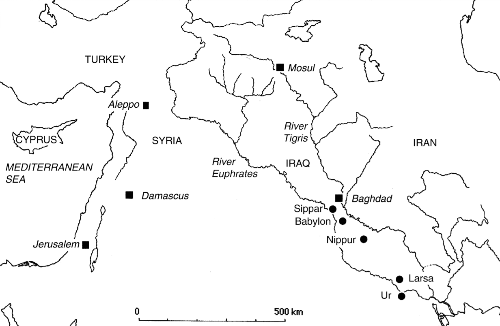
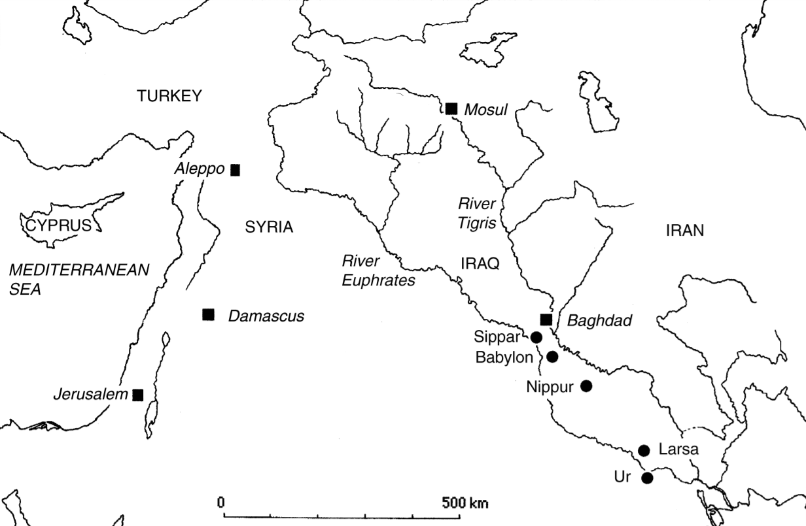

Euclid's Formula for Generating Pythagorean Triples
Ancient Fascination
Pythagorean triples, for one reason or another, have been captured the attention of people for thousands of years. The earliest known list of Pythagorean triples is on a cuneiform tablet known as Plimpton 322, believed to have been created in the ancient city of Larsa (southern Iraq) around 1800 BCE, not long before the Babylonian conquest of the region.
 

The purpose and context of the tablet is not certain, but Eleanor Robson argues in her 2002 article that it might have been used as part a teacher's problem list. (The article is also the source of the above map and all my information on the subject).
What's particularly interesting to me is that some of the Pythagorean triples are quite large. The largest triple of the list, converted to our writing system, is 12,709 - 13,500 - 18,541. Clearly the author wasn't using some brute force method, especially considering all the calculations had to be done by hand.
Robson's paper discusses some of the techniques the author might have used if you're interested, but I'm more concerned by the fact that someone living almost 4000 years might be capable of calculations I'm not. And so, how can we calculate the triples?
Euclid's Formula
Well, not surprisingly, Euclid discussed this issue in Lemma 1 of Proposition 29, Book 10 of his Elements. His solution is stunningly simple:
Simply let \(n\) and \(m\) be natural numbers such that \(n > m\), then
$$n^2 - m^2,~2nm,~n^2 + m^2$$is a pythagorean triple. It makes sense how one might arrive at this expression. Examining the squares \((a+b)^2=a^2+2ab+b^2\) and \((a-b)^2=a^2-2ab+b^2\), we see that we'd have two sides of a pythagorean triple if their difference, \(4ab\), were a square. Well, the easiest way to achive this is just to let both \(a\) and \(b\) be squares, yielding the above set of numbers.
But this way of arriving at it doesn't seem to satisfying, to me at least. It seems to rely to much on luck in realizing that this works. But it turns out there's a pretty intuitive way of arriving at this if you're comfortable with complex numbers.
Multiplying Triangles
You might recall from math class that complex numbers can written two forms, the usual form of \(a+ib\), and a polar form of \(re^{i\theta}\), where \(r\) is the distance from \(0\) and \(\theta\) is the angle between the line connecting 0 to the number and the real axis. You can convert between the two by recalling and applying Euler's forumla: \(e^{i\theta}=\cos\theta+i\sin\theta\).
Anyway, you can think of complex multiplication as a sort of rescaling plus a rotation, as:
$$re^{i\theta}\rho e^{i\phi}=r\rho e^{i(\theta+\phi)},$$the resulting numbers distance from the origin is just the product of the two multiplied distances, and the angle with the real axis is the sum.
If you're not too comfortable with representing complex numbers in polar form (perhaps you never took real analysis, or forgot how to prove that powers are summed when you multiply exponents) but are comfortable with linear algrebra, there's another way to convince yourself that multiplication is just scaling and rotation.
Multiplication by a complex number \(a+ib\) is linear operation, meaning we can understand what it does to any number by asking what it does to a basis. In this case, our vector space is \(\mathbb{C}\), so a suitable basis would be \(\{1, i\}\). \((a+ib)1=a+ib\),